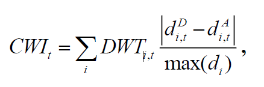
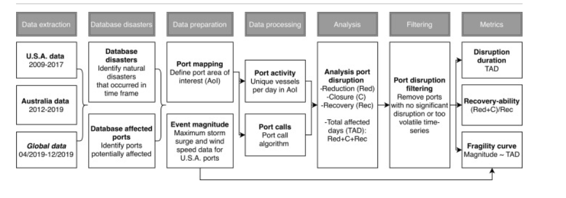

Automatic Identification System
Contents
Automatic Identification System#
Introduction#
The Automatic Identification System was originally developed by the International Maritime Organization in 2004 to prevent collisions between large vessels. This system requires all commercial ships (gross tonnage greater than 300) and passenger ships to broadcast their position and other characteristics via ground stations and satellites. The resulting data is highly complex as it includes dynamic information on ship movements (position and speed), and static information on ship characteristics and voyage-related attributes.
Although AIS was originally developed to maintain safety at sea, recent work by IMF researchers has highlighted its potential to nowcast economic statistics, with a particular focus on trade. Most relevantly, Arslanalp, Koepke and Verschuur (2019) conducted a study to track daily merchandise trade at the port-level in the Pacific Islands.
This branch of work will build on these initiatives by adapting and improving methodologies to derive trade and fishing statistics for the Pacific Island Countries (PICs).
Data Visualization#
These interactive maps were generated with the following layers:
22KM square boundary (buffer) for port point
IMF defined port boundaries
2019 AIS Heatmap (random 10% per buffer, aggregated by H3 resolution 12, ~154 sqm per H3)
Set-up
UNGP Platform: Ocean Spark / adb kernel OR
UNGP Platform: Data Mechanics / cherryl kernel
from IPython.display import HTML, IFrame
Pacific Island Countries#
FEDERATED STATES OF MICRONESIA
IFrame(src='images/ais/Micronesia2019.html', width=800, height=600)
FIJI - no data prep yet
KIRIBATI
IFrame(src='images/ais/Kiribati2019.html', width=800, height=600)
MARSHALL ISLANDS
IFrame(src='images/ais/Marshall-Islands2019.html', width=800, height=600)
NAURU
IFrame(src='images/ais/Nauru2019.html', width=800, height=600)
PALAU
IFrame(src='images/ais/Palau2019.html', width=800, height=600)
PAPUA NEW GUINEA - no data prep yet
SAMOA
IFrame(src='images/ais/Samoa2019.html', width=800, height=600)
SOLOMON ISLANDS
IFrame(src='images/ais/SolomonIslands2019.html', width=800, height=600)
TONGA
IFrame(src='images/ais/Tonga2019.html', width=800, height=600)
TUVALU
IFrame(src='images/ais/Tuvalu2019.html', width=800, height=600)
VANUATU
IFrame(src='images/ais/Vanuatu2019.html', width=800, height=600)
Trade Estimation Methodologies#
General Methodology
Define port boundary
Generate port calls from boundary
Estimate trade / generate indicators
2019 IMF: Big Data on Vessel Traffic: Nowcasting Trade Flows in Real Time
Port Calls created by Marine Traffic
Data waterfall
Exclude: speed > 1.0 knot
Exclude: Anchorage and bunkering tankers - remove bunkering tankers
Fuel supplied to foreign vessels should be recorded as exports of the country according to international standards, although it is recognized that data collection may be challenging.6 Since the inclusion of these tankers introduces considerable volatility to the indices, we omit bunkering tankers from our valid port calls
Exclude: Ship arrived but not departerd
Exclude: Stay in the harbor outside reasonable range for trade activity
stay in port < 5hrs: unlikely to have enough time to load or unload goods in the port
sta in port > 60 hrs: Longer stays may be associated with ships visiting the port for repairs or maintenance services.
Indicators:
cargo number
cargo load

DWT is adjusted with a capacity utilization ratio.
2020 Science Direct: Port disruptions due to natural disasters: Insights into port and logistics resilience
no mention of how port calls were derived

2020 IMF: World Seaborne Trade in Real Time
Port boundary:
SOG < 0.5, && nav status anchored or moored
2021 Global economic impacts of COVID-19 lockdown measures stand out in high-frequency shipping data
Port Boundary: manually mapped, berthing + navigation channels
Port Calls: Vessel call algorithm
Filter:
include: cargo and tanker vessels.
exclude: stay in port less than 5h and more than the 95th percentile (of the port) are truncated, as they are most likely associated with refueling, repair or maintenance.
exclude: turnaround time of less than 10h and leave the port area at a direction that is within 45 degree of the direction of entering the port area. These port calls are most likely associated with vessels passing a port (e.g. ports alongside a river).
2021 IMF: Tracking Trade from Space: An Application to Pacific Island Countries
Port Boundary: “manually determined using satellite imagery”
Port Call:
include: focus on container ships—the main engine of seaborne trade in the Pacific—vehicle carriers, and bulk carriers (relevant for Fiji, Nauru, and Solomon Islands as commodity-exporters).
exclude: Fuel tankers are not included, as Pacific countries import a significant portion of fuel for re-exports (for visiting foreign vessels and airlines
exclude vessels in transit: turnaround time of less than 5 hours and no draft change between the current and next port
Additional Resources#
AIS Handbook, Global Working Group on Big Data for Official Statistics
Data for this analysis is available through the UN Global Platform, which also hosts a dedicated working group to promote the use of AIS data to derive economic indicators.